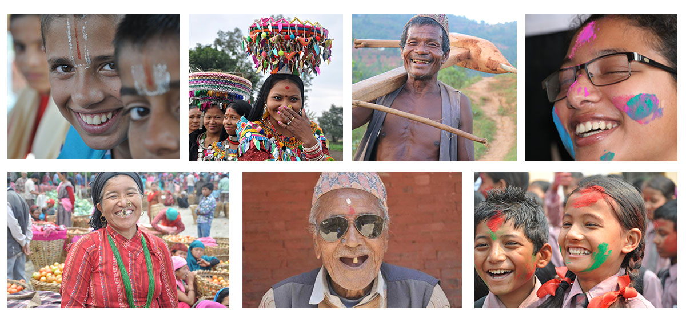

नेपाल एशियाको एक सुन्दर हिमाली राष्ट्र हो। विश्वको सर्वोच्च शिखर सगरमाथा (Mount Everest) यही देशमा अवस्थित छ। नेपाल विविध संस्कृति, जातजाति, भाषा र परम्पराले भरिएको देश हो।
नेपाली जनता:

नेपाली जनता साहसी, इमानदार र मेहेनती छन्। गाउँदेखि सहरसम्म, हरेक नेपालीको हृदयमा देशप्रेम र एकता बस्छ। विदेशी मुलुकमा समेत नेपालीहरू आफ्नो इमानदारी, मेहनत र व्यवहारबाट चिनिन्छन्।
नेपाली जनताका विशेषताहरू:
मेहनती र सहनशील – नेपाली जनता कृषि, सैनिक सेवा (गोर्खा), र विदेशमा काम गरी देशको अर्थतन्त्रलाई सहयोग गर्छन्।
आतिथ्यसत्कार – "अतिथि देवो भव" को भावना नेपालीहरूको रगतमा छ।
एकतामा विश्वास – विविधताभित्र एकताको उदाहरण नेपालले देखाएको छ।
चुनौती र अवसरहरू:
पर्यटन, जलविद्युत, र कृषि ले नेपालको विकासमा ठूलो योगदान दिन सक्छ।
राजनीतिक अस्थिरता र प्राकृतिक प्रकोप (भूकम्प, बाढी) ले नेपाललाई चुनौती दिँदै आएको छ।
नेपालको सम्भावना:
नेपाल सानो तर गौरवशाली देश हो। यहाँका मानिसहरू आफ्नो संस्कृति, भाषा, र स्वाभिमानलाई अगाडि बढाउँदै आएका छन्।
कृषि, पर्यटन, जलविद्युत्, प्राकृतिक स्रोत र मानवीय संसाधन नेपालको समृद्धिको मूल आधार हुन सक्छन्। यदि यिनको सही सदुपयोग गरियो भने नेपाल एसियाकै समृद्ध देश बन्न सक्छ।
🔮 🇳🇵 भौगोलिक विविधता
नेपाललाई मुख्य तीन भौगोलिक क्षेत्रमा विभाजन गरिएको छ:
हिमाली क्षेत्र – एवरेस्त, कञ्चनजङ्घा, अन्नपूर्णा जस्ता विश्वप्रसिद्ध हिमालहरू यहाँ पर्छन्।
पहाडी क्षेत्र – काठमाडौं, पोखरा, गोरखा जस्ता ऐतिहासिक र प्राकृतिक सुन्दरताले भरिपूर्ण सहरहरू।
तराई क्षेत्र – चितवन, बर्दिया जस्ता राष्ट्रिय निकुञ्जहरू, जहाँ बंगाल टाइगर, एकहोरिन गैंडा, र धेरै जंगली जनावरहरू पाइन्छन्।
नेपाली संस्कृति:
नेपाली परम्परागत लोक नृत्य, दशैँ-तिहारको उत्सव, र मन्दिरहरू देखिने गरी फोटो
पहाडी क्षेत्र – काठमाडौं, पोखरा, गोरखा जस्ता ऐतिहासिक र प्राकृतिक सुन्दरताले भरिपूर्ण सहरहरू।
तराई क्षेत्र – चितवन, बर्दिया जस्ता राष्ट्रिय निकुञ्जहरू, जहाँ बंगाल टाइगर, एकहोरिन गैंडा, र धेरै जंगली जनावरहरू पाइन्छन्।
नेपाली संस्कृति र परम्परा:
नेपाली परम्परागत लोक नृत्य, दशैँ-तिहारको उत्सव, र मन्दिरहरू देखिने गरी फोटो
१३० भन्दा बढी जातिजाति
१२० भाषा
यहाँको संस्कृति हिन्दू, बौद्ध, तथा अन्य साना जातीय समुदायहरूको मिश्रणले बनेको छ।
दशैँ, तिहार, होली, ल्होसार, छठ जस्ता चाडपर्वहरू धुमधामसाथ मनाइन्छ।
नेवार, गुरुङ, मगर, लिम्बू, तामाङ, शेर्पा जस्ता समुदायहरूको आ-आफ्नै परम्परा र भेषभूषा छन्
पशुपतिनाथ, स्वयम्भूनाथ, मुक्तिनाथ, लुम्बिनी जस्ता धार्मिक स्थलहरूले नेपाललाई आध्यात्मिक केन्द्र बनाएको छ।
यहाँको संस्कृति हिन्दू, बौद्ध, तथा अन्य साना जातीय समुदायहरूको मिश्रणले बनेको छ।
दशैँ, तिहार, होली, ल्होसार, छठ जस्ता चाडपर्वहरू धुमधामसाथ मनाइन्छ।
नेवार, गुरुङ, मगर, लिम्बू, तामाङ, शेर्पा जस्ता समुदायहरूको आ-आफ्नै परम्परा र भेषभूषा छन्
पशुपतिनाथ, स्वयम्भूनाथ, मुक्तिनाथ, लुम्बिनी जस्ता धार्मिक स्थलहरूले नेपाललाई आध्यात्मिक केन्द्र बनाएको छ।